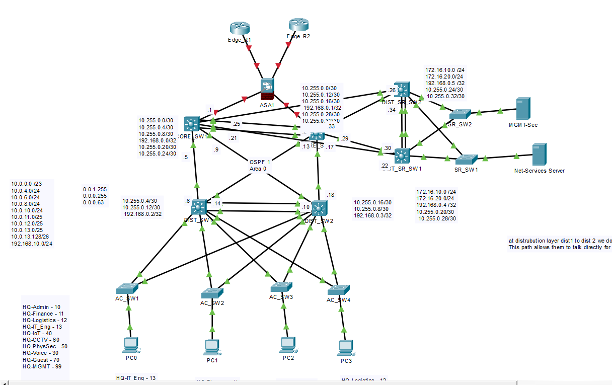

Part 1: Introduction and Topology
This series documents a lab I am building to design and implement the network of a fictional multi-site supermarket chain: a corporate headquarters campus, a server block, and two shopping-mall branches. I started it as a personal project to practise what a network engineer does on a real deployment: plan the addressing, build the layers, test failover, and write everything down so someone else can maintain it.
I first built the design in Cisco Packet Tracer. Packet Tracer limited what I could configure, so I moved the build to GNS3 and run real Cisco device images. The configuration notes in this series started in Packet Tracer and are being rebuilt and re-verified on GNS3 as I go. The project is still in progress, and Part 8 says exactly what is finished and what is not.
Series
- Part 1: Introduction and Topology
- Part 2: IP Addressing and Capacity Planning
- Part 3: Layer 2: VLANs, Trunks, EtherChannel, Rapid PVST+
- Part 4: First-Hop Redundancy with HSRP
- Part 5: Layer 3 Routing with OSPF
- Part 6: DHCP and IP Helper
- Part 7: Troubleshooting Log
- Part 8: Status and Roadmap
The company
A supermarket chain has two main business risks: downtime at the checkouts and a security breach through low-cost IoT devices or public Wi-Fi. The design priorities follow from that: isolation between device types, redundancy at every layer, and address space that can grow without renumbering.
Topology

Screenshot to add: images/topology.pngLogical topology: HQ three-tier campus, server block and branch sites'">
Each site follows a campus design. Floors have their own access switch, which connects to two Layer 3 distribution switches, which connect to a Layer 3 core. The server block uses its own pair of distribution switches in a collapsed design and connects to the core. The HQ design continues with an internal firewall (optional), an edge router and a perimeter firewall towards the internet and the branches.
Devices
| Role | Names in the lab | Function |
|---|---|---|
| Core | CORE-SW1, CORE-SW2 | Layer 3 backbone, EtherChannel between the two cores |
| Distribution | DIST-SW1, DIST-SW2 | Inter-VLAN routing, HSRP gateways, DHCP relay, STP root |
| Server distribution | DIST_SR_SW1, DIST_SR_SW2 | HSRP gateways for the server VLAN |
| Access | One switch per floor | Access ports, PortFast, BPDU Guard |
Configuration files
- Distribution layer: VLANs, STP, HSRP
- Access layer
- Core and distribution: loopback, EtherChannel, OSPF
- DHCP relay
Credentials, hostnames and addresses in the lab are for training only.